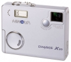
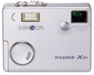
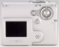

器材库 > 不可换镜头数码相机 > DiMAGE X20

规格总览
发布日期
2003-07-12
停产
是
影像规格
影像传感器
CCD
影像传感器尺寸
1/3.2英寸
总像素
210万
有效像素
200万
静态图像尺寸
1600 x 1200
静态图像格式
JPEG
画幅比
4:3
短片尺寸
320 × 240@24fps
短片格式
AVI
镜头和对焦
镜头结构
10片/9组
非球面镜片
2片
焦距
4.8mm-14.4mm
等效35mm画幅焦距
37mm-111mm
最大光圈
2.8-3.7
光学变焦
3倍
数码变焦
4倍
最近对焦距离
10cm
对焦模式
5点Video AF系统
曝光控制
测光模式
多分区评价测光
曝光模式
P（程序自动曝光）
快门速度
4–1/1000s
曝光补偿
±2EV以1/3EV级调整
ISO感光度
64, 100, 200, 400, 自动
白平衡
自动, 预设白平衡
自拍
10秒, 2秒
连拍
1.5 fps
闪光灯
内置闪光灯
固定
闪光模式
自动, 慢速同步, 减轻/消除红眼, 强制闪光, 关闭, 减轻红眼慢速同步
取景规格
LCD类型
彩色TFT LCD
LCD尺寸
1.5英寸
文件输入/输出
存储卡
SD/SDHC
数据接口
USB
视频/音频接口
AV 输出
电源
电池
2枚AA可充电电池
外观
颜色
银色
尺寸
86 x 67 x 23.5mm
重量
115g
haiyangsea2009-02-03 23:593.75 分
操作性 4.00功能性 4.00美观性 4.50趣味性 4.50耐用性 5.00性价比 4.00解像力 2.00色彩还原 2.00
zcxhcs2005-07-27 17:163.63 分
操作性 4.50功能性 3.00美观性 4.50趣味性 4.00耐用性 4.00性价比 3.00解像力 3.00色彩还原 3.00
五花马2004-07-01 17:284 分
操作性 3.00功能性 4.50美观性 4.50趣味性 4.50耐用性 3.50性价比 5.00解像力 3.00色彩还原 4.00
guardian2004-06-09 20:494.19 分
操作性 4.00功能性 2.00美观性 5.00趣味性 5.00耐用性 4.00性价比 5.00解像力 4.00色彩还原 4.50
霹雳啪啦啦2004-05-10 12:543.81 分
操作性 3.50功能性 4.50美观性 4.50趣味性 4.50耐用性 3.50性价比 4.00解像力 2.50色彩还原 3.50
产品图 / 样片
DiMAGE X20

DiMAGE X20

DiMAGE X20
DiMAGE X20
评测 / 相关文章
该产品暂无存档的评测文章